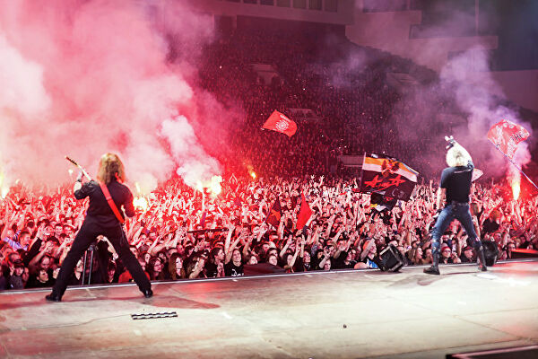
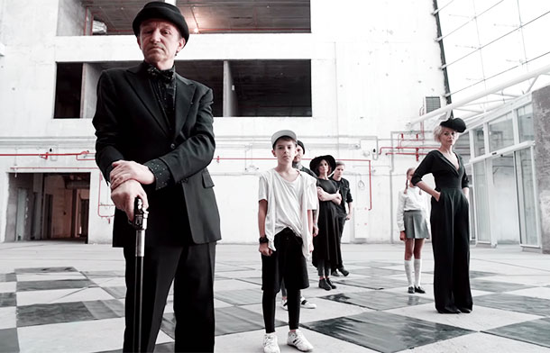

Красное на черном
Времена, что отпущены нам,
Солнцем в праздник, солью в беде,
Души резали напополам.
По ошибке? Конечно нет!
Награждают сердцами птиц
Тех, кто помнит дорогу наверх
И стремится броситься вниз.
Нас вели поводыри-облака,
За ступенью – ступень,
Как над пропастью мост,
Порою нас швыряло на дно,
Порой поднимало до самых звезд,
Красное на черном!

Моментик из концерта группы Алиса
Солнцу — время, луне — часы,
Словно в оттепель снегопад,
По земле проходили мы.
Нас величали черной чумой,
Нечистой силой честили нас,
Когда мы шли, как по передовой,
Под прицелом пристальных глаз.
Будь, что будет! Что было есть!
Смех да слезы, а чем еще жить?
Если песню не суждено допеть,
Так хотя бы успеть сложить.
Красное на черном!
Во сне хитрый демон может пройти сквозь стены
Дыханье у спящих он умеет похищать.
Бояться не надо, душа моя будет рядом
Твои сновидения до рассвета охранять.
3асыпай на руках у меня, засыпай
Засыпай под пение дождя
Далеко, там где неба кончается край
Ты найдёшь потерянный рай.
Подставлю ладони, их болью своей наполни
Наполни печалью, страхом гулкой темноты.
И ты не узнаешь, как небо в огне сгорает
И жизнь разбивает все надежды и мечты.
3асыпай на руках у меня, засыпай
Засыпай под пение дождя
Далеко, там где неба кончается край
Ты найдёшь потерянный рай.
«И все время платим, а цены растут» - Шура из Би-2
Гости рубрики Лева и Шура
«Будь, что будет! Что было есть!» - кто-то из Алисы
Компромисс и Лайки (микс)
Был худой, молодой, ел сердца
Пил и курил, зажигал и гасил
Думал, будешь таким до конца
Оставлен за спиной возраст Христа
Обратной стороной повернулась мечта
Лежит на струнах пыль
Ржавеет под окном разбитый телевизор
Ты сгладил все углы
И жизнь твоя сплошной проклятый компромисс
Ни вверх, ни вниз
Ты сгладил все углы
И жизнь твоя сплошной проклятый компромисс
Темноты боятся скелеты в шкафу,
Рвется от нагрузки всемирная сеть,
Нам двоим достался один парашют,
Значит, прыгнем вместе и будем лететь.
Ты так прекрасна моя любовь,
Как много лайков у нас с тобой.
Я с чужим котенком стою под дождем,
Ты в нарядном платье встречаешь весну,
Мы все ждем чего-то, куда-то идем,
И все время платим, а цены растут.
Ты так прекрасна моя любовь,
Как много лайков у нас с тобой.
Новый день нарезан как праздничный торт,
Жаль кусок все время идет мимо рта,
Свежий комментарий, что я уж не тот,
Не меняет факта, что ты еще та.

Фрагмент клипа группы Би-2
Выбираешь запой или спорт
Может, рискнёшь, стариною тряхнёшь
Напоследок возьмёшь свой аккорд
Оставлен за спиной возраст Христа
Обратной стороной повернулась мечта
Лежит на струнах пыль
Ржавеет под окном разбитый телевизор
Ты сгладил все углы
И жизнь твоя сплошной проклятый компромисс
Ни вверх, ни вниз
Лежит на струнах пыль
Ржавеет под окном разбитый телевизор
Ты сгладил все углы
И жизнь твоя сплошной проклятый компромисс
Ни вверх, ни вниз
Счастье пришло